面向全双工交互场景的强回声消除系统演示
硕士学位论文音频样例展示
注：双讲场景下，近端语音被强回声严重掩盖。本算法旨在极低信回比下提取纯净近端人声。
| 工况 | 远端参考 (Ref) | 原始麦克风 (Mic) | 增强后 (Enhanced) | 目标语音 (Target) |
|---|---|---|---|---|
| -30 dB | 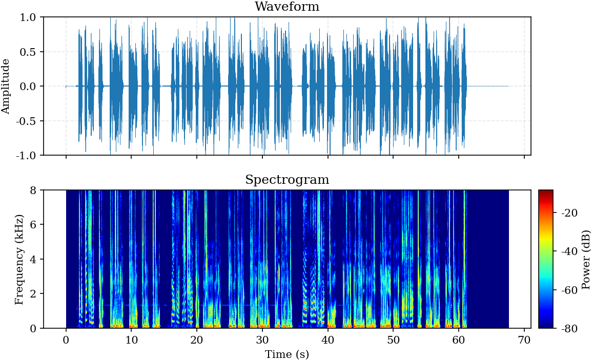 |
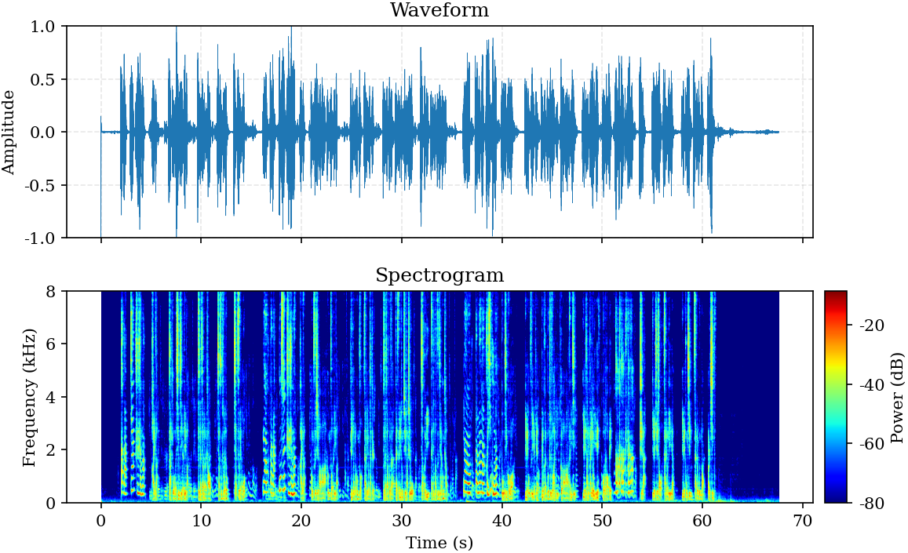 |
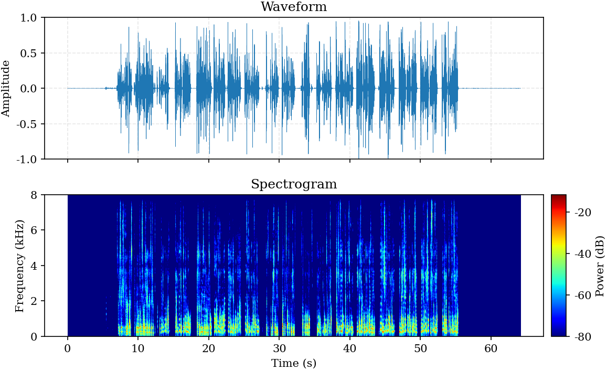 |
|
| -20 dB | 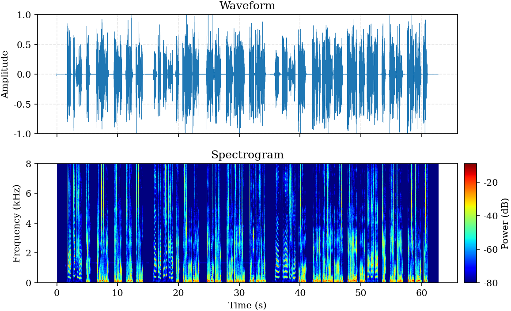 |
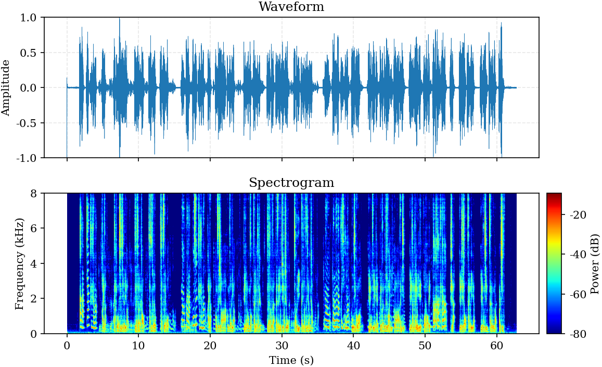 |
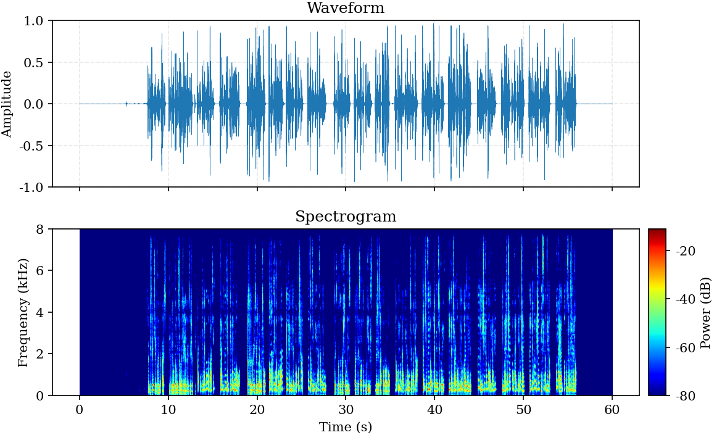 |
|
| -10 dB | 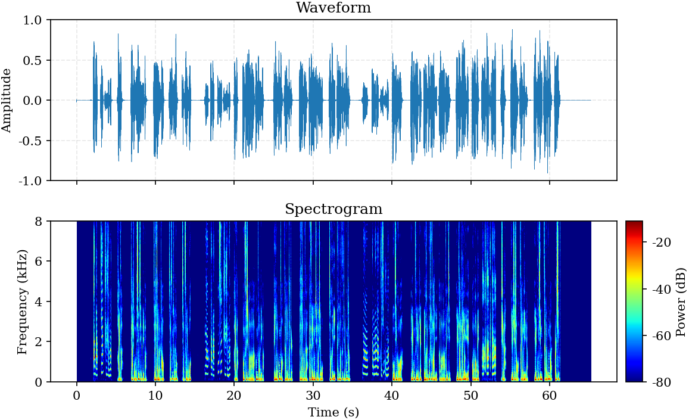 |
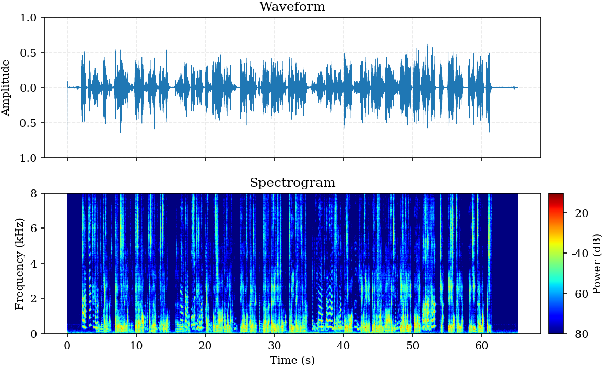 |
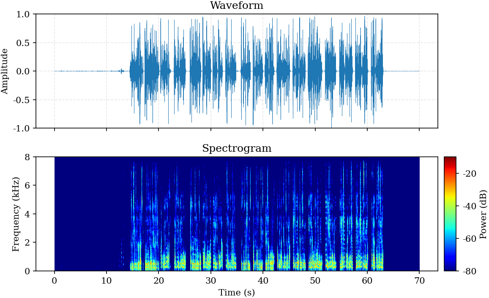 |
注：远端单讲场景下，理想输出应为完全静音。
| 工况 | 远端参考 (Ref) | 原始麦克风 (Mic) | 增强后 (Enhanced) |
|---|---|---|---|
| -30 dB | 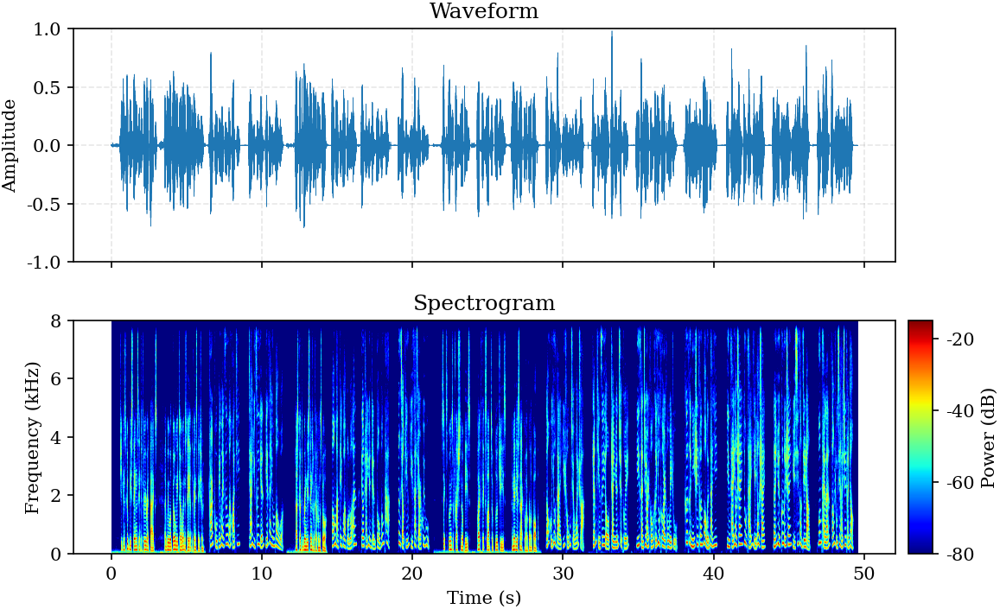 |
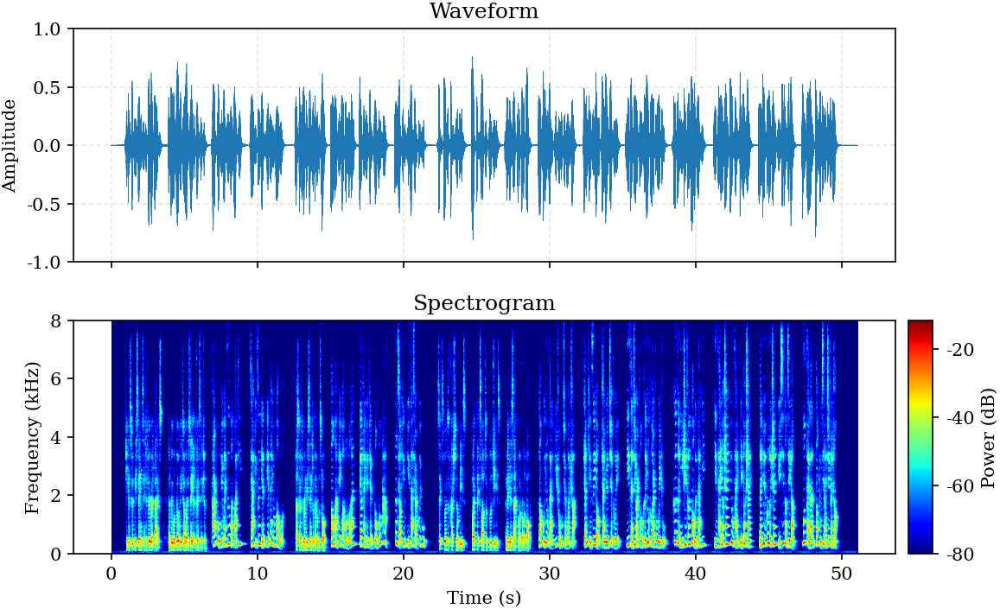 |
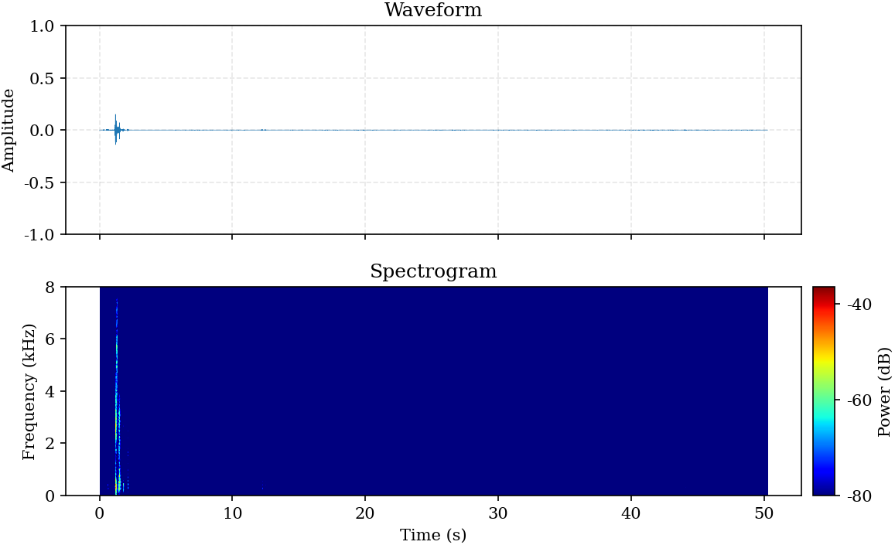 |
注：近端单讲场景下，理想输出应保持原始语音不失真。
| 场景描述 | 原始麦克风 (Mic) | 增强后 (Enhanced) |
|---|---|---|
| 双人对话 | 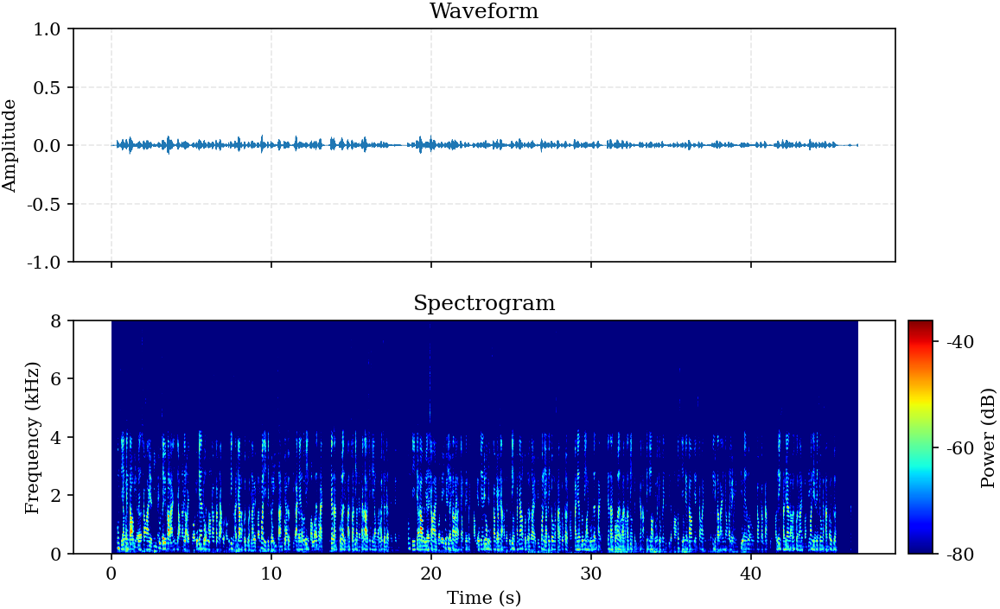 |
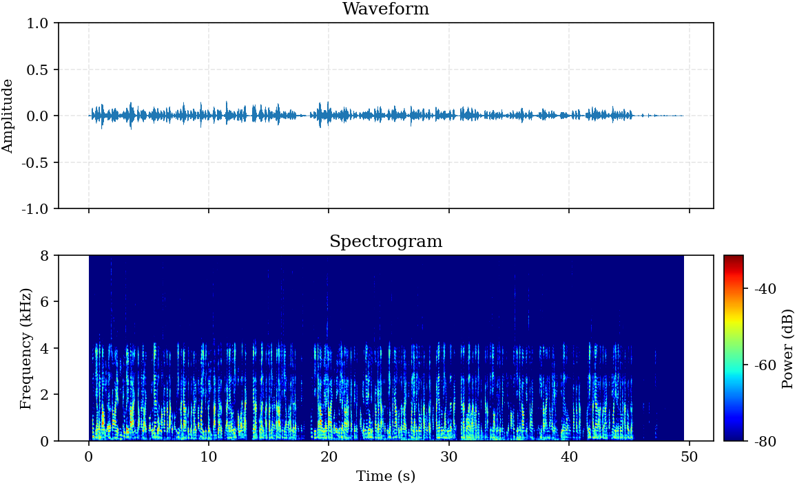 |